<div class="textcontainer">
<p class="margin"></p>
<h2 class="main-header">Final Project: Customizable LED Picture Frame</h2>
<h4 class="section-header">Overview</h4>
<div class="section-container">
<p>I want my final project to be a form of room augmentation: a large, poster-sized LED "picture frame" that can display animations, drawings, and patterns. The core idea is open-ended customization: instead of one fixed function, the frame can be transformed by uploading different scripts/animations.</p>
<p>The physical format is a standard <b>24 x 36 inch</b> frame filled with an LED grid. A diffuser layer spreads light evenly, and a divider grid (laser-cut or 3D printed) separates pixels/sections for cleaner visuals.</p>
<p>Instead of an Arduino, I plan to use an <b>ESP32</b> so I can have stronger control and enable wireless updates (Wi-Fi/Bluetooth), making it easier to upload animations without relying on USB every time.</p>
</div>
<h4 class="section-header">Design Considerations</h4>
<div class="section-container">
<ul>
<li><b>Controller placement:</b> deciding whether the microcontroller lives outside the frame or inside the frame in its own enclosure (heat protection and safety).</li>
<li><b>Weight + mounting:</b> keeping materials light enough that the whole system can hang on a wall reliably.</li>
<li><b>LED wiring strategy:</b> connecting multiple LED strips so they can be powered and controlled effectively from the ESP32 (including power injection and clean data routing).</li>
</ul>
</div>
<h4 class="section-header">Current 3D Model</h4>
<div class="section-container">
<div class="image-grid-3">
<p>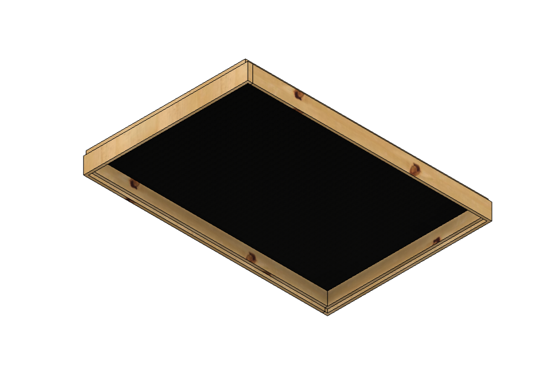</p>
<p>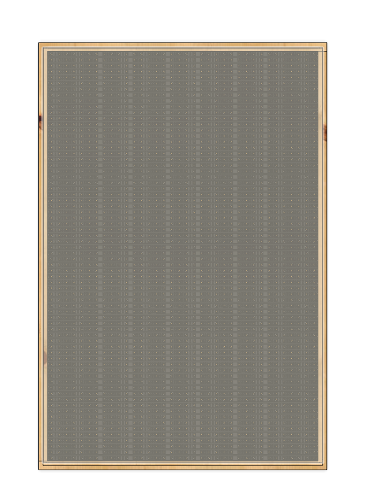</p>
<p>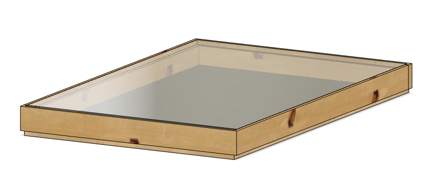</p>
</div>
<p class="caption">Current CAD progress: frame concept, LED grid layout, and diffuser/frame assembly views.</p>
<div class="image-grid-2">
<img class="project-img" src="../05_3Ddesign/final_project_look_at%20_pixels.png" alt="Final project CAD: close-up of pixels">
<p>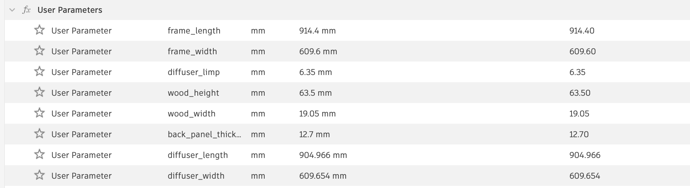</p>
</div>
<p class="caption">Close-up of pixel layout and a snapshot of my parametric values.</p>
</div>
<h4 class="section-header">Bill of Materials (Draft MVP)</h4>
<div class="section-container">
<p><b>Electronics</b></p>
<ul>
<li>ESP32 development board</li>
<li>USB cable for programming</li>
<li>330 ohm resistor (data line protection)</li>
<li>1000 uF capacitor (power stabilization)</li>
</ul>
<p><b>LED System</b></p>
<ul>
<li>2x rolls WS2812B LED strip (5 m, 60 LED/m)</li>
<li>3-pin JST LED connectors</li>
<li>22 AWG wire (for LED power and data lines)</li>
</ul>
<p><b>Power</b></p>
<ul>
<li>5 V 20 A LED power supply</li>
<li>AC power cable</li>
<li>DC screw terminal / barrel connector</li>
</ul>
<p><b>Diffuser</b></p>
<ul>
<li>1x frosted acrylic sheet (24 x 36 in, ~3 mm thick)</li>
</ul>
<p><b>Divider Grid (3D Printed)</b></p>
<ul>
<li>1 spool black PLA filament</li>
<li>3D printed pixel divider modules (tile pieces forming the grid)</li>
</ul>
<p><b>Frame / Structure</b></p>
<ul>
<li>Wooden frame pieces (for 24 x 36 poster frame)</li>
<li>1/2-inch plywood backing board (24 x 36)</li>
<li>Wood screws</li>
<li>Wood glue</li>
</ul>
<p><b>Mounting</b></p>
<ul>
<li>French cleat wall mount</li>
<li>Small standoffs for mounting electronics</li>
</ul>
<p><b>General Hardware</b></p>
<ul>
<li>M3 screws or small machine screws</li>
<li>Heat shrink tubing</li>
<li>Zip ties or cable clips for wire management</li>
</ul>
<p>This list is a draft and will be finalized after MVP prototyping and TA feedback.</p>
</div>
<h4 class="section-header">Timeline (Current Plan)</h4>
<div class="section-container">
<ul>
<li><b>Week of March 16:</b> start MVP prototyping and test feasibility (LED strip control, wiring approach, controller placement).</li>
<li><b>Following weeks:</b> get feedback from TAs/peers and refine design decisions.</li>
<li><b>After feedback:</b> finalize bill of materials and request/order materials.</li>
<li><b>Build phase.</b> Assemble the full frame, diffuser, divider grid, power system, and electronics, then iterate until stable and presentable.</li>
</ul>
</div>
---
<h2 class="main-header">Progress Update</h2>
<div class="section-container progress-update-lede">
<p>With the <a href="../07_outputs/index.html">Week 7 electronic outputs</a> MVP validated, the two main milestones for reaching the final version were: <b>building the full-size frame</b> (scaled up from that build) and <b>wiring all 1,536 LEDs</b> onto that frame so the existing app and sketch software could drive the complete grid. Here is how that went.</p>
</div>
<h4 class="section-header">Frame Attempt 1: MDF + Lamination</h4>
<div class="section-container">
<p>My first instinct was to use <b>MDF</b> for the frame. Based on the spacing and dimensions from my MVP, I needed a piece at least <b>24 × 12 inches</b> and <b>1 inch thick</b>. The length and width were fine, but 1-inch MDF stock was not available in the lab. The workaround was to cut thinner pieces and <b>laminate them together</b> with wood glue until I reached the thickness I needed.</p>
<p>I grabbed raw MDF sheet stock, used a <b>cordless jigsaw</b> to cut the pieces to size, then clamped and glued them into a single laminated blank.</p>
<div class="image-grid-2">
<p>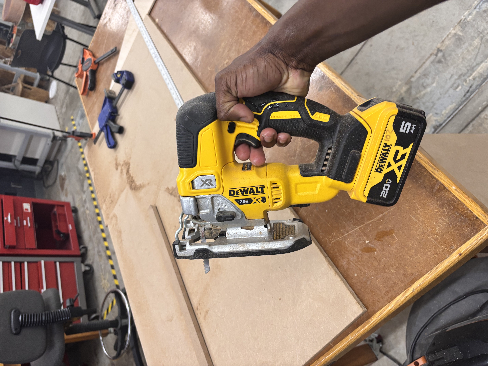</p>
<p>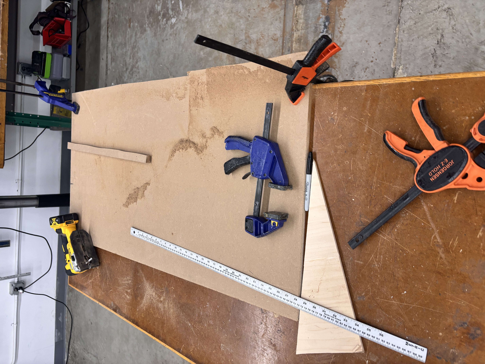</p>
</div>
<p class="caption">Cutting MDF down to size with a cordless jigsaw before laminating.</p>
<div class="image-grid-2">
<p>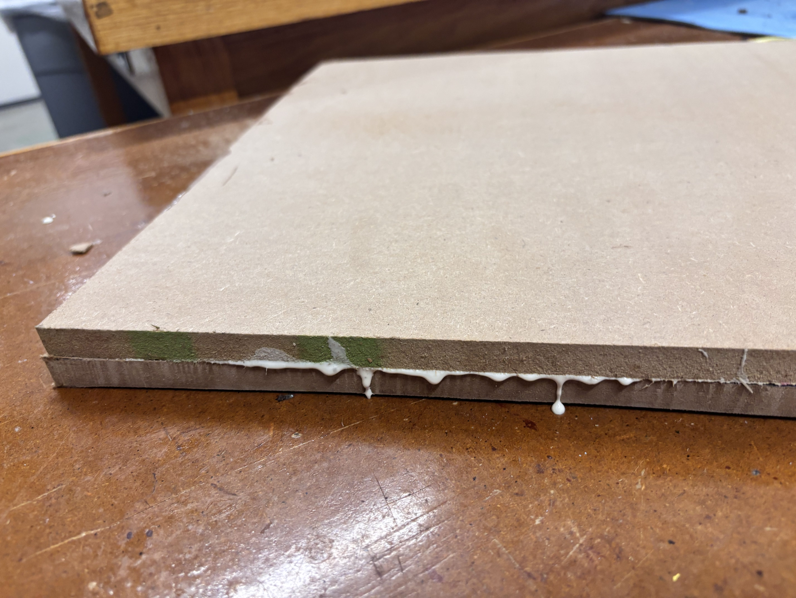</p>
<p>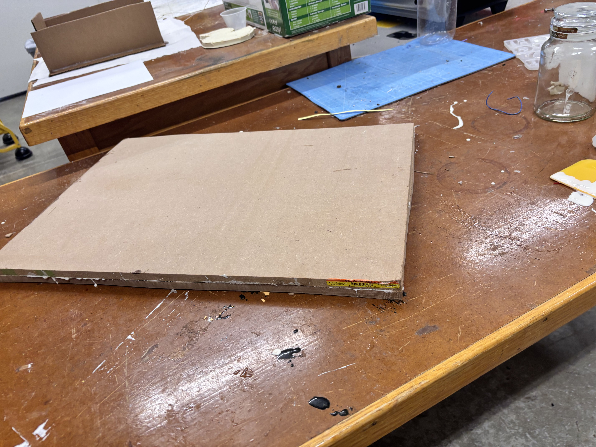</p>
</div>
<p class="caption">Laminated MDF blank after gluing, clamped and drying.</p>
<p>Right before committing this blank to the ShopBot, I thought hard about what MDF machining actually produces: <b>a huge amount of saw dust and residue</b>. That dust would clog up the ShopBot bed, risk fouling the spindle, and leave the cut quality worse than I wanted. I decided to find a cleaner path.</p>
</div>
<h4 class="section-header">Frame Attempt 2: Laser-Cut Plywood, Layer by Layer</h4>
<div class="section-container">
<p>Instead of subtractive machining from a thick MDF blank, I switched to a <b>layer-by-layer additive approach</b>: take the 3D model of the frame, slice it into <b>6 mm cross-sections</b>, laser cut each cross-section from plywood, then <b>stack and bolt</b> the layers together with <b>four M5 screws</b> to form the complete frame body.</p>
<div class="center-column">
<p>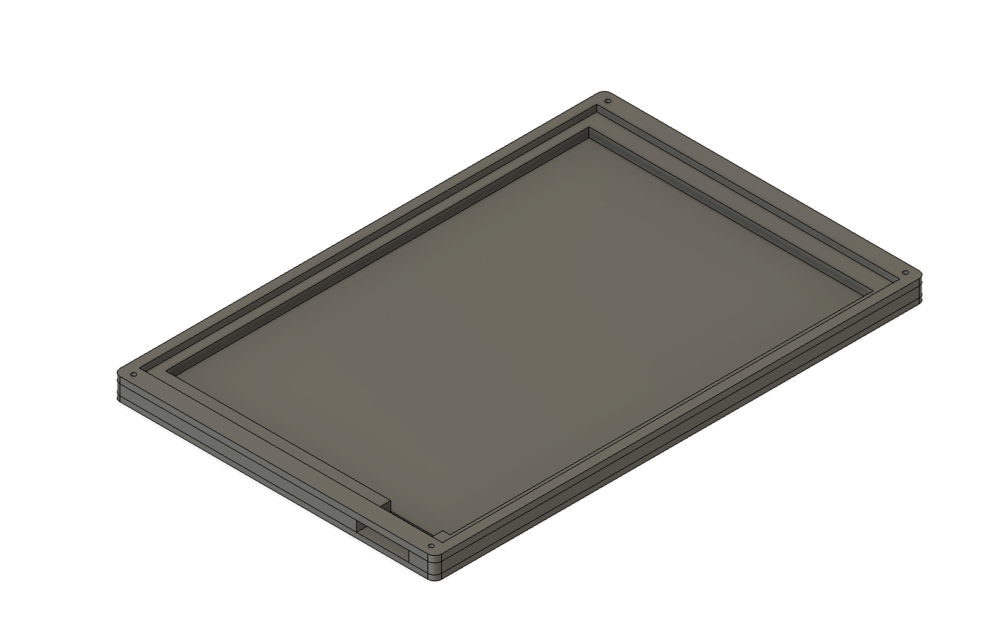</p>
</div>
<p class="caption">Updated 3D model of the frame redesigned for 6 mm laser-cut plywood layers.</p>
<p>This approach was faster and much cleaner than a long ShopBot job. The catch was that <b>each layer was itself an assembly</b>. Every individual cut piece had to be aligned and glued carefully before the next layer went on top. Getting the alignment right took trial and error. If anything was even slightly off, later layers would not seat flush. Eventually I worked out a consistent process and the full frame came together without any jagged edges or gaps.</p>
</div>
<h4 class="section-header">Power System: Planning for 300 W</h4>
<div class="section-container">
<p>Once the frame was assembled, I started wiring up the LEDs and thinking hard about power. Each of my six <b>[WS2812B 16×16 LED panels](https://www.amazon.com/BTF-LIGHTING-Individual-Addressable-Flexible-Controllers/dp/B088BTYJH6/ref=sr_1_1_sspa?crid=3C2RFHZA8D8GZ&dib=eyJ2IjoiMSJ9.OhXqG8awxm5yksvFszDETbjvvXgkZ9kWHBpRobye2Vs7umYf_8E64zyztOKtjEdpRVJIudSASuMv0wyDM5LZQNJA5i3oL7AjTsJzk14e_aINab2u74mr2mU7kZLGz8Cu5docg1jYy8JQZ0M30S4PsihMohxYezABwbPZMZKXpfadfKSlmCcxFZKQ1_D5M2ocCzbwO64X-UwocLwC7Gc20rnEom4-2Tdyvt_snGtIvUCP0vbFnJGtiyBs0hkQ4mTQ2i8FeKAzRj2YKAA7-F6v-_sSxloo5y7BlNDcosvoJsw.7ULDpSgJakclsORSXbHkEUKp_pVFCC2cdlI18yXaGKY&dib_tag=se&keywords=WS2812B%2Bmatrix%2Bpanels&qid=1775123203&s=hi&sprefix=ws2812b%2Bmatrix%2Bpanels%2Ctools%2C122&sr=1-1-spons&sp_csd=d2lkZ2V0TmFtZT1zcF9hdGY&th=1)</b> can draw up to <b>~50 W</b> at max brightness and full white. That puts worst-case total draw at <b>~300 W</b>. That is well beyond the 120 W most standard wall adapters are rated for.</p>
<p>I did not want to artificially limit what animations and sketches the frame could display, so I sourced a <b>[300 W 5 V / 60 A AC-DC converter](https://www.amazon.com/ALITOVE-Transformer-Converter-Security-Computer/dp/B06XK3X3PW/ref=sr_1_6?crid=15MXT1SGYA629&dib=eyJ2IjoiMSJ9.ARsgFamqJlleGc2RswveQZTZr1bsa3d8dm7rCKSKsRez9tbZcExVXnmCQKOxsMSFusftJjLetG9VimeT5GOaqMFr3x-k11ZYFDjuTDs4LNblmuLairxRVDheCs2ot3T9q1t-bFQbr_0JQWzEwHPgic5J4ui13TYkLIfN2-CI34K2QpH3vXUW7Ml-7qWHsfBSvHkW6EAOAdRXPAXk1bD11wTPwBCKD7M-VUovstXrdkrr8ykxUKqmV9FJNOcBYXlSGyAT19Fxjq8rDmiA46Bx3tDvccLdkBDciSS5qybNdEw.fNAWhOVIoRJYLiF3QdimQyZlTuKWeiTUeXBESMaS7sk&dib_tag=se&keywords=ALITOVE%2B5V%2B60A%2B300W&qid=1775940465&sprefix=alitove%2B5v%2B60a%2B300w%2Caps%2C164&sr=8-6&th=1)</b>. This style of supply is well-documented in LED projects, so wiring it up was straightforward. Once connected, I confirmed the LEDs lit up and held stable under load.</p>
<div class="image-grid-2">
<p>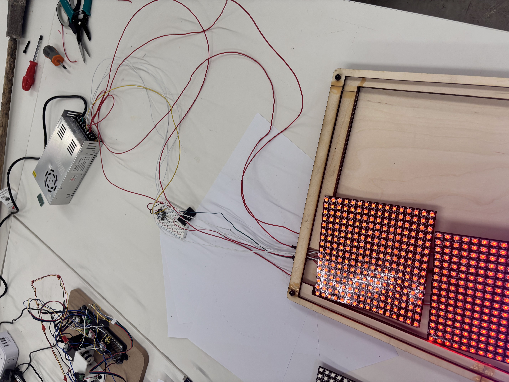</p>
<p>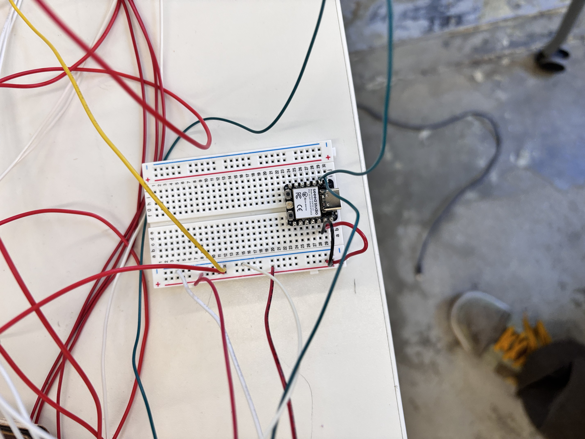</p>
</div>
<p class="caption">Power supply pipeline and breadboard circuit connecting the AC-DC converter to the ESP32 and LED grids.</p>
</div>
<h4 class="section-header">LED Control: Hitting the Single-Pin Limit and Fixing It</h4>
<div class="section-container">
<p>With power sorted, I ran into a control issue. I assumed I could drive all 1,536 LEDs from a <b>single digital data pin</b> on the <b>Seeed Studio XIAO ESP32-C3</b>. When I tested this, only about <b>~1,450 LEDs</b> would respond correctly. The last 80 or so simply would not light up.</p>
<p>After some digging, the cause was the <b>single-core ESP32-C3's memory and timing limits</b>. Refreshing a chain that long saturated what the chip could push through one pin in time. The fix was to <b>split the LED load across two data pins</b>. One pin handles half the grid, the other handles the rest. I also switched from the <b>Adafruit NeoPixel library to FastLED</b>, which gave me finer timing control and resolved the remaining edge cases.</p>
<p>After both changes, all <b>1,536 LEDs respond correctly</b> and can be driven from an external battery source when needed.</p>
<div class="image-grid-2">
<p>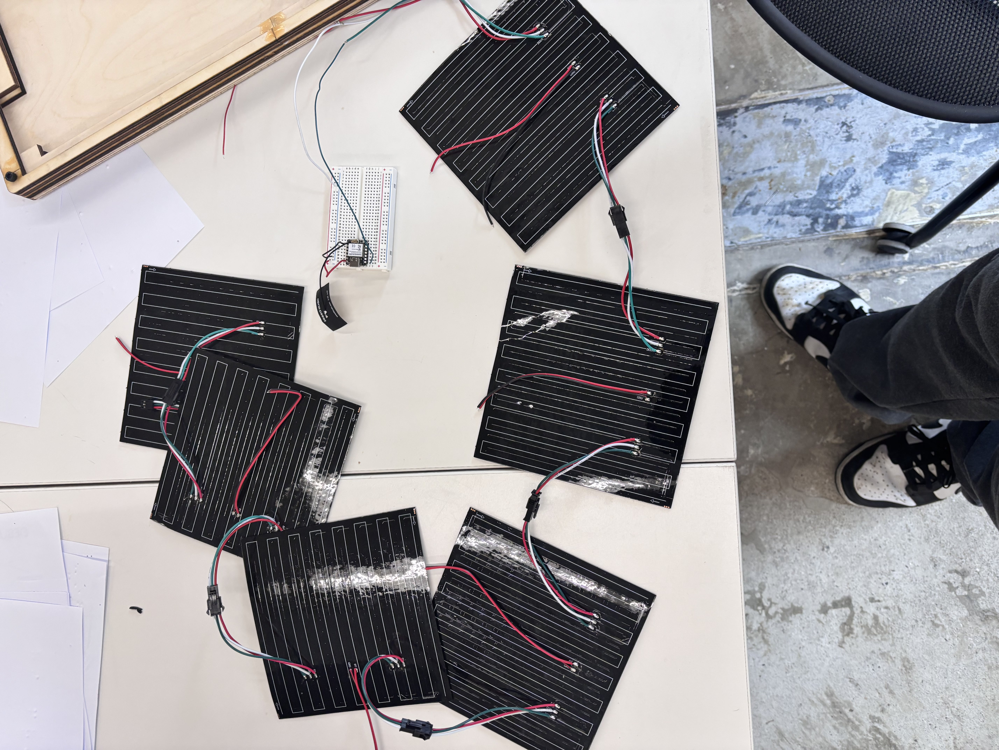</p>
<img class="project-img" src="./process/male_female_jst%20connection_between%20led_grids.jpg" alt="Male-female JST connections between LED grid panels">
</div>
<p class="caption">All six 16×16 panels daisy-chained via male-female JST connectors.</p>
<div class="center-column">
<p>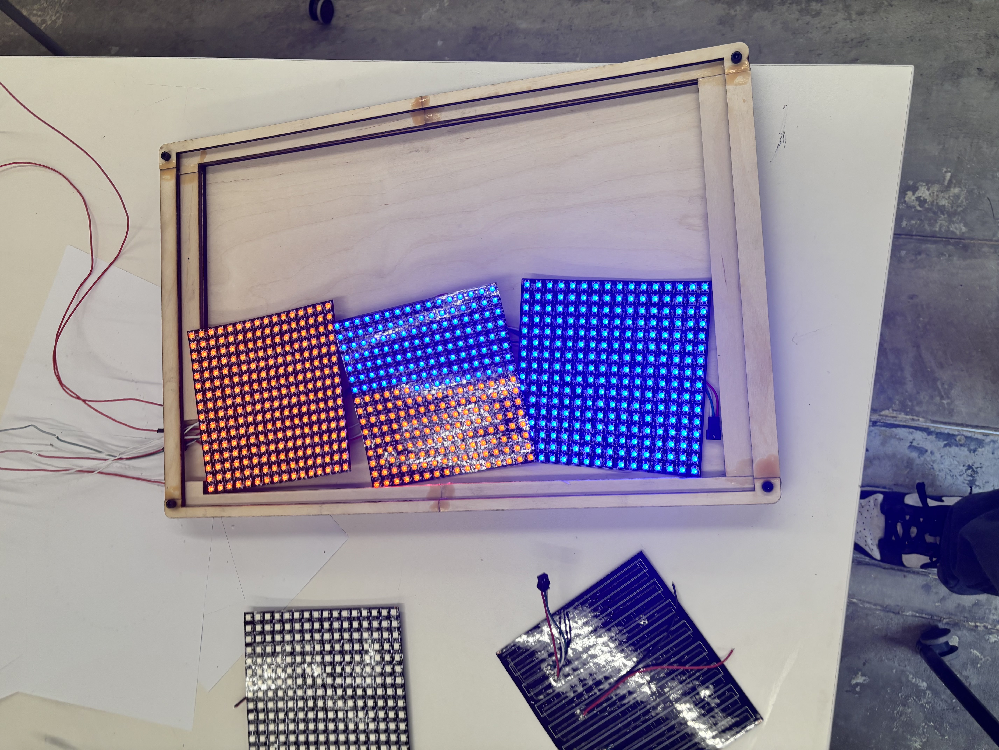</p>
</div>
<p class="caption">Early power test: three panels lighting up successfully off the AC-DC supply.</p>
<div class="center-column">
<p>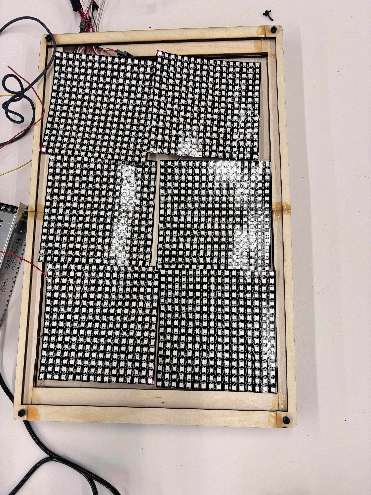</p>
</div>
<p class="caption">Full 1,536-LED assembly in progress.</p>
</div>
<h4 class="section-header">Software, 56 Pixel MVP to 1,536 Pixels, and Better Sketches</h4>
<div class="section-container">
<p>Once every LED was addressable, I refactored my <b>React Native (Expo)</b> companion client so the firmware and layout match the live wall. I recalibrated orientation in software so the sketch origin and scan order line up with how the six 16×16 panels are wired across the two FastLED data buses. The first working stills used a simple workflow, downsample to 48 by 32, add a light box blur, sample pixels, then send the same JSON <i>frames</i> package the board already understood. That validated the path, but quality issues showed up quickly.</p>
<p><b>First sketch on the full grid.</b> This shot is the milestone where a still proved the large wiring map and upload path worked end to end.</p>
<div class="center-column">
<p>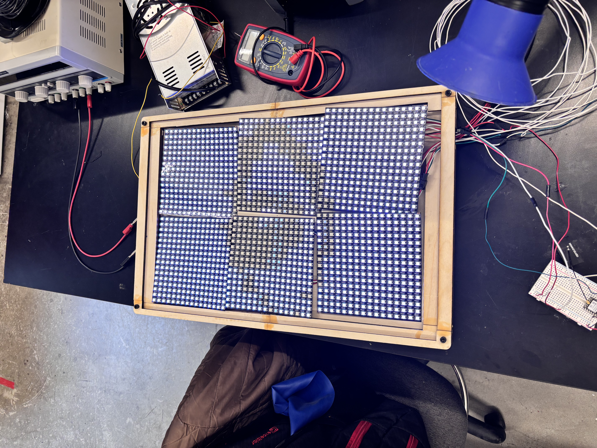</p>
</div>
<p><b>What broke with the naive pipeline.</b> Subtle ramps and low contrast photos turned into blobs. The small tonal differences that define a face or a sky simply disappeared. Animated GIFs amplified the problem. Colors could blow out, look too cool or too hot compared to the in app preview, and frame to frame noise made the animation feel unstable on the diffuser. The captures in the next blocks are what I was seeing on the desk while I dug into the readings below.</p>
<p><b>Gradient sky.</b> Right now a soft sky loses steps. The preview, the photo I feed in, and what the wall shows sit side by side so the smearing is obvious.</p>
<div class="image-grid-3">
<p>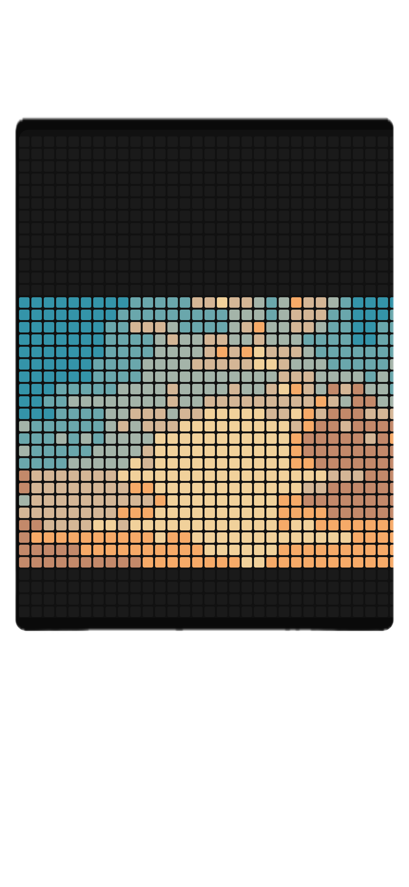</p>
<p>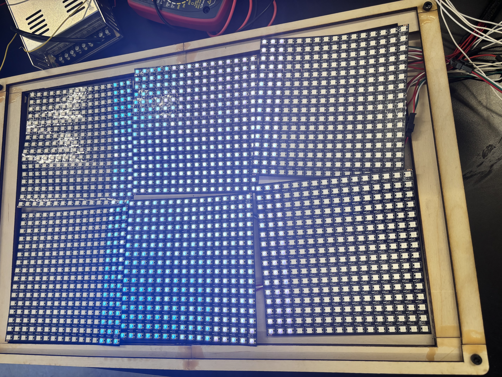</p>
</div>
<p class="caption">Example of how a low gradient sky is not represented well or clearly.</p>
<p><b>Kakashi GIF.</b> The clip reads as blocks of color instead of line work. Face edges and costume folds collapse into a single muddy region on the wall even when motion is smooth enough in the file.</p>
<div class="image-grid-2">
<p>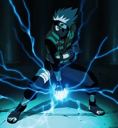</p>
<video class="project-img" controls muted playsinline preload="metadata">
<source src="./progress_to_finish/kakashi_gif_led_upload_preupdated_approach.mp4" type="video/mp4">
Your browser does not support the video tag.</video>
</div>
<p class="caption">Screen recording of the same Kakashi upload as it plays on the matrix today.</p>
<p><b>Flaming sword motion.</b> The blade outline disappears between frames. It reads as a bright smear instead of a thin edge moving through the scene.</p>
<div class="center-column">
<video class="project-img" controls muted playsinline preload="metadata">
<source src="./progress_to_finish/flaming-sword_pre_updated_approach.mp4" type="video/mp4">
Your browser does not support the video tag.</video>
</div>
<p class="caption">Sword clip showing how the stroke collapses into a blob of light on the diffuser.</p>
<p><b>Reading signal-processing literature.</b> I pulled five threads that matched the failures I saw and merged them into the practical pipeline I run in software. The table lists each paper, the problem it comes from, and how I use the idea on a 48 by 32 wall. Titles link to the PDFs.</p>
<table class="table table-bordered table-sm align-middle" style="width:100%;max-width:100%;font-size:15px;">
<thead class="table-light">
<tr><th scope="col">Paper</th><th scope="col">Core problem</th><th scope="col">How it informs this project</th></tr>
</thead>
<tbody>
<tr>
<td><a href="./research%20papers/Content-Adaptive%20Image%20Downscaling.pdf">Content-Adaptive Image Downscaling</a></td>
<td>Global resizers blur edges or alias fine lines when you shrink to a tiny grid.</td>
<td>Inspired edge aware weighting. My day to day path uses SAID style fusion instead of the full bilateral solve in the paper.</td>
</tr>
<tr>
<td><a href="./research%20papers/Structure%20Aware%20Image%20Downscaling.pdf">Structure-Aware Image Downscaling</a></td>
<td>Plain bicubic smears structure people care about on small displays.</td>
<td>Default spatial step, Sobel guided blend of a bicubic base and a sharpened branch at LED resolution.</td>
</tr>
<tr>
<td><a href="./research%20papers/Pixelated%20Image%20Abstraction.pdf">Pixelated Image Abstraction</a></td>
<td>Pixel art needs both where each LED pulls color from and how the palette is chosen.</td>
<td>Optional pixel art mode ideas, pooling regions per LED and palette control in perceptual color space when I want caricature clarity.</td>
</tr>
<tr>
<td><a href="./research%20papers/EdgeAwareColorQuantization_small.pdf">Efficient edge-aware color quantization and dithering</a></td>
<td>Quantization and dithering done separately can band or speckle across edges.</td>
<td>After spatial downscale I pick palettes and dither with edge awareness so noise does not jump object boundaries on the wall.</td>
</tr>
<tr>
<td><a href="./research%20papers/Learning%20Spatio-Temporal%20Downsampling%20for%20Effective%20Video%20Upscaling.pdf">Learning spatio-temporal downsampling for effective video upscaling</a></td>
<td>Treating frames independently causes flicker and bad color jumps in motion.</td>
<td>GIF path uses shared palettes over time, small per LED hysteresis, and stable timing so clips stay continuous on the diffuser.</td>
</tr>
</tbody>
</table>
<p><b>Implementation shape.</b> The mobile client still gathers pixels through the hidden Canvas and WebView bridge from Week 7. The pipeline classifies sketch versus icon versus photograph, crops or letterboxes toward a 48 by 32 canvas, applies SAID inspired fusion, median cut palettes when K is small, mild dither only on photographs, perceptually tuned color steps where affordable, and gamma and brightness clamps so a frame does not demand the full 300 W supply. On device builds keep one palette across animated clips when possible, smooth small temporal differences, and respect timing when decimating for bandwidth.</p>
<p><b>Source repository.</b> Implementation for the companion app and board side code is in <a href="https://github.com/dvthomas01/esp_ledboard">esp_ledboard on GitHub</a> if you want to reproduce the wiring, uploads, or playback behavior.</p>
</div>
<h4 class="section-header">Refinement, Sketches, GIFs, and the ESP32-S3 Upgrade</h4>
<div class="section-container">
<p>After refactoring how I upload GIFs and stills, the results moved in the right direction. <b>Temporal consistency improved</b>, flicker dropped, motion stayed continuous, and I could read real features in clips such as Pac Man, short animations, or grabs from shows. <b>Color fidelity tightened up</b>. What I saw in the app preview matched what landed on the diffuser closely enough to call it one to one for practical work. Routing each upload through <b>content aware post processing</b> for sketches, cartoons, and photographs made the biggest difference once the math was wired in.</p>
<p>The next bottleneck was not pixels but <b>memory and upload time on the Seeed Studio XIAO ESP32-C3</b>. Longer GIFs and heavier clips pinned RAM. Even modest animations took a long time to push over Wi-Fi. I optimized transport by <b>streaming frames sequentially</b> instead of blasting whole animations in one shot, which helped, but the C3 still capped what I could ship. I also tried an <b>Espressif ESP32-DevKitC</b> with module <b>ESP32-WROOM-32</b> for extra headroom, yet RAM still felt tight for the GIF workloads I wanted. Moving to the <b>Seeed Studio XIAO ESP32-S3</b> changed the story. I got much more usable memory and faster handling on device. GIF uploads and playback stopped being the bottleneck in my testing. I have not run into a frame count ceiling on the S3 yet. With compute less of a choke point, I could focus on finishing the object itself.</p>
<div class="center-column">
<img class="project-img" src="./progress_to_finish/picture%20of%20c3%20before%20i%20switch%20to%20s3.jpeg" alt="Seeed Studio XIAO ESP32-C3 before upgrading to XIAO ESP32-S3">
</div>
<p class="caption">Picture of XIAO ESP32-C3 I used initially before upgrading to the S3.</p>
<p><b>Naruto Shadow Clone Rasengan.</b> The GIF on the left is the Shadow Clone Rasengan motion encoded after the sketch pipeline run. The capture on the right is that same sequence on the LED panels.</p>
<div class="image-grid-2">
<video class="project-img" controls muted playsinline preload="metadata">
<source src="./progress_to_finish/updated_aproach_test_with_naruto_on_led_board.mp4" type="video/mp4">
Your browser does not support the video tag.</video>
</div>
<p class="caption">Naruto Rasengan GIF vs. the sketched GIF pushed through the updated pipeline.</p>
<div class="center-column">
<video class="project-img" controls muted playsinline preload="metadata">
<source src="./progress_to_finish/updated_aproach_test_with_name_tagmp4.mp4" type="video/mp4">
Your browser does not support the video tag.</video>
</div>
<p class="caption">D-A-M-I readout using the updated sketch path.</p>
</div>
<h4 class="section-header">Mechanical Finish: Paint, Breadboard Case, Leveling, and Diffuser</h4>
<div class="section-container">
<p>I used <b>black acrylic paint</b> on the wooden frame for a consistent finish and to absorb stray light so neighboring pixels read cleanly instead of washing each other out through side spill.</p>
<div class="center-column">
<p>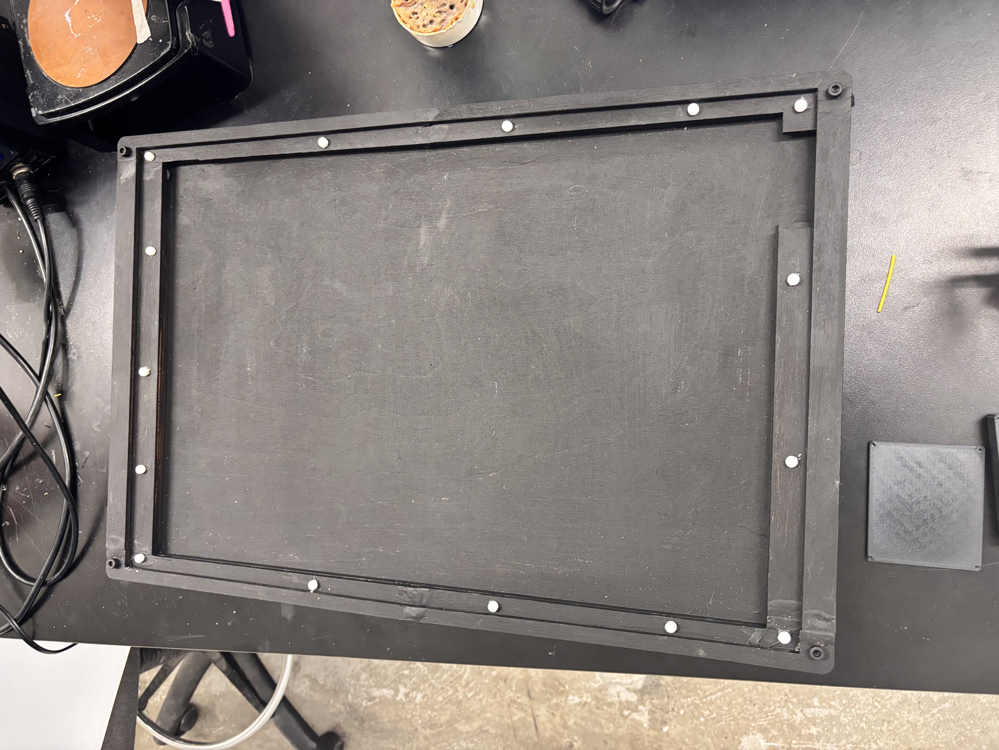</p>
</div>
<p class="caption">Frame after blackout paint, same tone as the printed enclosure parts.</p>
<p>For the control electronics, I did not want bare breadboards hanging off the back forever. I iterated on a <b>3D printed enclosure</b> for size, venting, and how boards seat, and settled on a <b>threaded, bolted</b> retention path so the hardware stays secure. I printed the parts in a <b>black that matches the frame</b> for a single visual language. Once the fit looked right, I used <b>Velcro</b> so the assembly can release for service without turning the enclosure into a permanent glue bomb.</p>
<div class="center-column">
<p>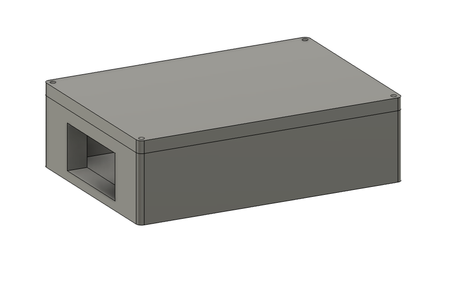</p>
</div>
<p class="caption">CAD for the printed breadboard housing, threaded fastening with a serviceable Velcro interface to the case.</p>
<div class="image-grid-2">
<p>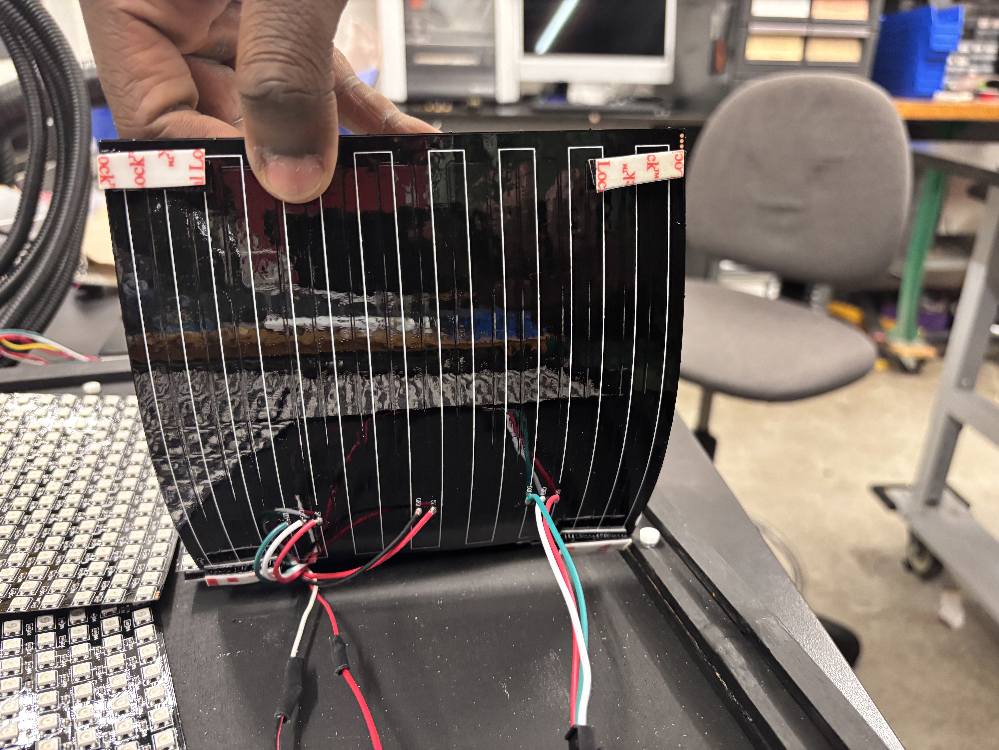</p>
<p>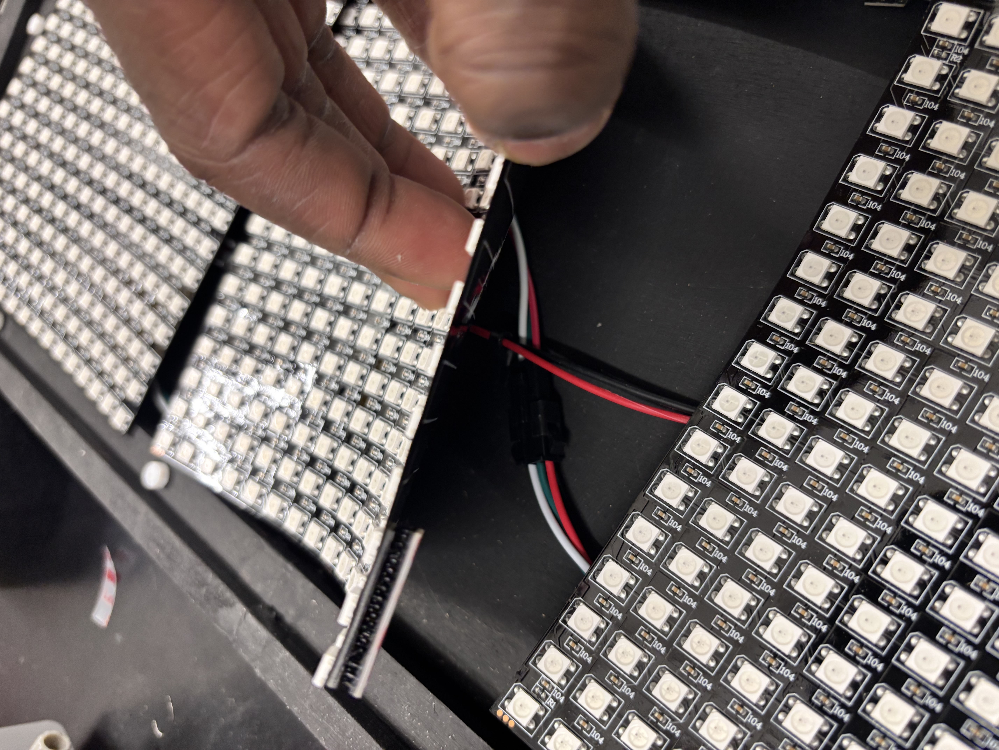</p>
</div>
<p class="caption">Velcro gave me a firm but removable way to dock the enclosure after confirming wiring clearance.</p>
<p>When I first laid the LED grids on the frame, <b>panel height varied</b> because daisy chain wiring and JST stacks under some tiles lifted them more than others. I shimmed every module with <b>Velcro on the back</b> to equalize standoff, then <b>hot glued those pads</b> to the frame so vibration would not walk tiles out of alignment. The goal was simple, keep every pixel the same distance from the diffuser so the image plane looks even, not a mix of smushed and floating tiles.</p>
<p>For diffusion I had planned on <b>frosted acrylic</b>, but in the lab I found <b>HDPE sheet</b> that diffused well and was easy to source. I CNC’d a <b>20.75 by 13.75 inch</b> panel, then sanded edges until it <b>press fit</b> inside the frame. Slow hand work, but it locked the optics in without rattles.</p>
<div class="center-column">
<p>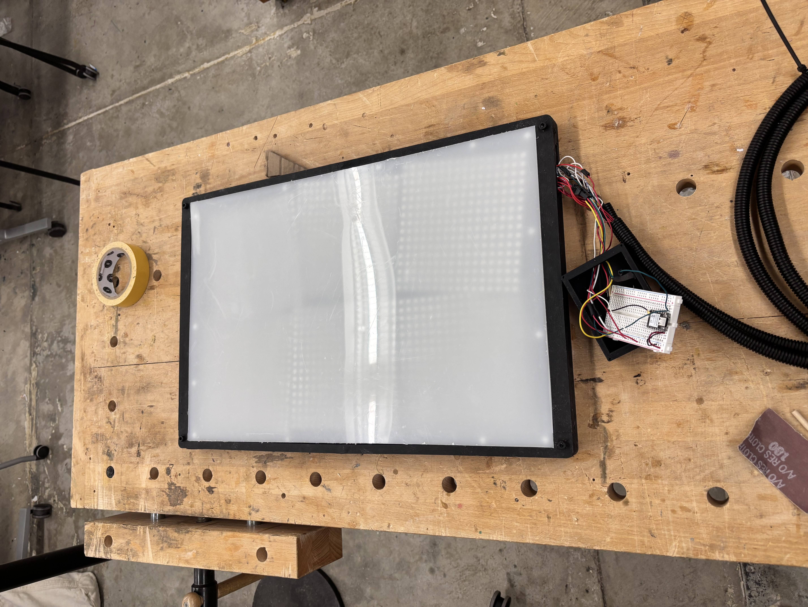</p>
</div>
<p class="caption">HDPE diffuser in place over the stacked matrix. Last major mechanical gate before final wiring cleanup.</p>
<p>I rerouted <b>power injection harnesses through sleeving</b> so dozens of supply leads disappear into bundled runs instead of forming a rat’s nest behind the poster. With the diffuser seated, firmware refreshed to the latest builds, and app binaries aligned, the stack finally behaved like a single product.</p>
<p><b>Full assembly.</b> This photo is the wiring, diffuser, and frame closed up before the closing demos.</p>
<div class="center-column">
<img class="project-img" src="./progress_to_finish/full%20project%20assembly.jpeg" alt="Full poster assembly with cables managed">
</div>
<p class="caption">Everything sandwiched for the last tuning passes.</p>
<div class="image-grid-2">
<video class="project-img" controls muted playsinline preload="metadata">
<source src="./progress_to_finish/final_product_demi_1.mp4" type="video/mp4">
Your browser does not support the video tag.</video>
<video class="project-img" controls muted playsinline preload="metadata">
<source src="./progress_to_finish/final_product_demo_2.mp4" type="video/mp4">
Your browser does not support the video tag.</video>
</div>
<p class="caption">Final demo of the project</p>
</div>
<h4 class="section-header">Reflection + Next Steps</h4>
<div class="section-container">
<p>The finished piece <b>accepts stills and GIFs</b>, shows crisp motion with the updated pipeline, and looks cohesive under diffusion. I could author my own sketches, upload them, and get predictable results on hardware.</p>
<p>This project ended up exercising nearly every <i>PS70</i> skill stack I touched, <b>electronics</b> with LEDs, supplies, and data path, <b>embedded control</b> with ESP bring up and upgrades, <b>networked software</b> for wire format and companion app, <b>woodworking and finishing</b>, <b>3D printing for enclosures</b>, and <b>CNC routing</b> for the diffuser blank. It is the most integrated build I have shipped in the class so far.</p>
<ul>
<li><b>Immediate next step.</b> Design a <b>wall mounting solution</b> so the poster can live as room art instead of bench hardware.</li>
<li><b>Future idea.</b> Explore an <b>interactive layer</b>, for example a capacitive or thin touch overlay on the diffuser, for interactive art at pixel scale.</li>
</ul>
</div>
</div>